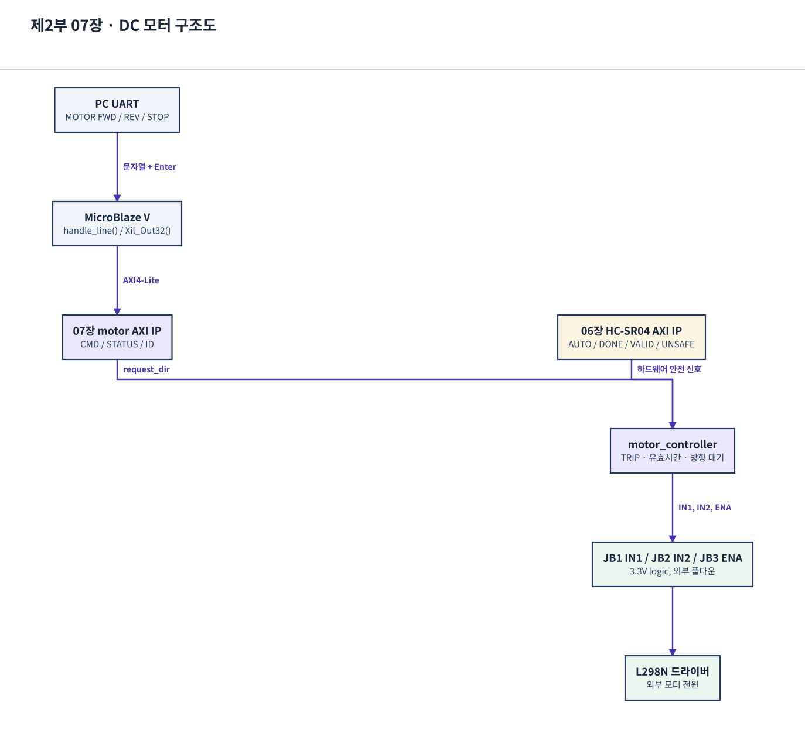
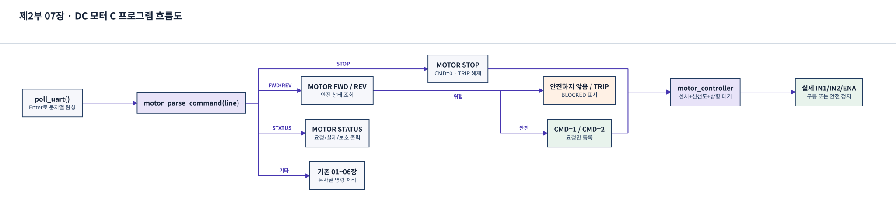

00이 장의 목표
AXI4-Lite 사용자 IP + motor_controller + HC-SR04 독립 하드웨어 안전 인터록
- Vivado/Vitis 2024.2
- Basys3 XC7A35T
- UART 문자열 + Enter
01과제 개요 · 06장 다음에 추가하는 기능
MicroBlaze V가 UART 문자열 명령을 받아 AXI4-Lite에 방향을 요청하고, 모터 구동 허용 여부는 독립 RTL이 판단합니다. 초음파 측정값이 오래되거나, 물체가 가까워지거나, 센서 오류·SONIC OFF가 발생하면 ENA를 차단합니다.

| 기준 | 내용 |
|---|---|
| 프로젝트 | soc_ip_design_07 (06장 프로젝트를 복제해 생성) |
| 외부 드라이버 | L298N 계열 모듈(모터 전원 외부 공급) |
| 안전 회로 | motor_controller.v의 직접 출력 차단·정/역방향 대기·TRIP |
02UART 명령·정상 동작
| 입력 + Enter | 결과 |
|---|---|
| MOTOR FWD | 센서 AUTO 활성·유효 거리·TRIP 해제 시 정회전 요청 |
| MOTOR REV | 위 조건 충족 시 역회전 요청, 주행 중이면 출력 OFF 대기 후 전환 |
| MOTOR STOP | 언제든 정지 요청, TRIP 해제(다음 FWD/REV는 별도 입력) |
| MOTOR STATUS | 요청 방향, 실제 출력, 정지/위험/신선도 표시 |
| SONIC ON | 주기 측정 시작. 첫 유효 측정 전에 MOTOR는 시작 불가 |
| SONIC OFF | 주기 측정 중지 → 모터 즉시 차단, 구동 중이면 TRIP 기록 |
| WARN 20 | 20 cm 이하를 위험으로 판정, 근접 정지 연계 |
| WARN OFF | LED2 경고만 비활성화, 모터 보호는 그대로 적용 |
| STATUS | 01~06장 기존 상태 + 07장 MOTOR 필드 추가 |

요청값과 실제 구동값은 다릅니다. OK MOTOR REQUESTED FWD는 회전 확인이 아니라 AXI 명령 기록만 의미합니다. 실제 실행 여부는 MOTOR STATUS의 MOTOR_ACT 및 MOTOR_EN으로 판정합니다.
03모터 제어 안전 규칙
모터 구동 허용
SONIC AUTO ON(명령: SONIC ON), 최신 유효 완료값, 20cm 초과(기본), TRIP 해제가 모두 필요합니다.
즉시 차단 조건
근접, 잘못된 거리, 센서 미응답, SONIC OFF, 샘플 250ms 초과 → ENA 낮음. 오류 중 발생한 구동 요청은 TRIP으로 기록됩니다.
| 시험 입력 | 기대 출력·상태 |
|---|---|
| 부팅 직후 | IN1=0, IN2=0, ENA=0 |
| SONIC ON 직후 유효값 없음 | 구동 금지 |
| 정상 거리·MOTOR FWD | ENA=1, IN1=1, IN2=0 |
| MOTOR REV 전환 | 양방향 IN1/IN2/ENA=0 구간을 둔 뒤 반전 |
| 근접 / 센서 오류 / 유효시간 만료 | ENA=0, MOTOR_TRIP=1 |
| 거리 복귀 후 FWD 재입력 | TRIP이 남아 있으면 BLOCKED |
| MOTOR STOP 후 안전 재확인, 새 FWD | 재시작 가능 |
04Basys3–L298N 배선·전압 규칙
| Basys3 Pmod | FPGA PACKAGE_PIN | 드라이버 | 주의 |
|---|---|---|---|
| JB1 | A14 | IN1 | 모터 방향 제어 |
| JB2 | A16 | IN2 | 모터 방향 제어 |
| JB3 | B15 | ENA | 모듈 ENA 점퍼 제거, 외부 풀다운 추가 |
| Pmod GND | – | GND | 외부 드라이버와 FPGA의 신호 접지 공통 |
| 외부 DC 공급 | – | Vs / motor power | 모터 정격·드라이버 사양에 맞는 별도 전원 |
기존 JA1 CdS, JA2 TRIG, JA3 ECHO, 내장 LED0~2, FND·방향 버튼·BTNC Reset·USB UART의 기존 연결은 변경하지 않습니다.
05사용자 AXI4-Lite 레지스터 맵
| Byte Offset | 레지스터 | 접근 | 의미 |
|---|---|---|---|
| 0x00 | CMD | RW | 0 STOP, 1 FWD, 2 REV; STOP 쓰면 TRIP 해제 |
| 0x04 | STATUS | RO | bit0 EN, 1 FWD, 2 REV, 3 TRIP, 4 DEADTIME, 5 SAFE, 6 FRESH, 7 AUTO, 8 REQ_NONZERO, 9 BLOCKED |
| 0x08 | ID | RO | 0x00070001 |
| 0x0C | DEADTIME | RO | direction blanking clock cycles |
| 0x10 | FRESHNESS | RO | completed sonar sample maximum age clock cycles |
| 0x14 | CLK_HZ | RO | actual AXI clock frequency supplied to IP |
motor_in1, motor_in2, motor_ena는 AXI 레지스터를 직접 연결한 GPIO가 아닙니다. motor_controller가 센서 조건과 TRIP·방향 전환 상태를 반영하여 출력합니다.
기본 파라미터: CLK_HZ=100000000, DEADTIME_CYCLES=10000000(100ms), FRESH_CYCLES=25000000(250ms). 실제 AXI 클록에 따라 재산정합니다.
0606장 출발 프로젝트 확인
작업 · GUI / 입력
06장의 Vivado/Vitis 실물 기준 프로젝트가 실제로 만들어져 있는지 확인. 아직 06장 실제 프로젝트가 없다면 01~06장 실습을 먼저 완료하고 07장으로 넘어갑니다.
화면 · 출력 확인
Sources에 06장 IP 및 기존 UART/GPIO/Timer/INTC/FND/CdS/SONIC IP 확인. 06장 HTML 작성만으로 06장 XPR이 생긴 것은 아닙니다.
동작 원리 · 06장 프로젝트의 IP와 연결을 확인한 뒤 07장을 시작합니다.
0707장 독립 프로젝트 생성
작업 · GUI / 입력
Vivado에서 06장 프로젝트 열기 → File → Project → Save As → 새 프로젝트 soc_ip_design_07 선택. 신규 프로젝트 XPR 위치 확인.
화면 · 출력 확인
~/soc/hw/soc_ip_design_07/soc_ip_design_07.xpr와 신규 .srcs가 존재. 06장 XPR 변경 없음.
동작 원리 · Save As 이후 XPR의 외부 경로·IP Repository 경로를 추가 확인합니다.
08기존 참조·리포지토리 경계 검사
작업 · GUI / 입력
Sources와 Tools → Settings → IP → Repository에 등록된 경로 확인. 06장 사용자 AXI IP 소스는 07장 프로젝트 내부 ip_repo로 복사해 별도 패키징.
화면 · 출력 확인
07장 파일을 수정해도 06장 파일이 달라지지 않아야 합니다. 경로가 절대경로로 06장을 가리키면 07장 복제본으로 교체.
동작 원리 · 기존 정상 프로젝트를 훼손하지 않는 가장 중요한 사전 검사입니다.
09배선도 검토·전원 OFF 검사
작업 · GUI / 입력
rtl/motor_jb_only.xdc와 JB1~JB3 배정, 모터 드라이버 IN1/IN2/ENA 및 접지 확인. 전원 OFF 상태에서 배선.
화면 · 출력 확인
ENA 점퍼 제거와 외부 풀다운 여부, 모터 외부 전원 분리, ECHO 레벨시프터 확인.
동작 원리 · 첫 테스트에서는 모터를 분리해 FPGA 출력 전압·논리를 확인합니다.
1007장 AXI IP 마법사 실행
작업 · GUI / 입력
Vivado → Tools → Create and Package New IP → Create a new AXI4 peripheral. 이름 p2_07_axi_motor, AXI4-Lite S00_AXI, Data Width 32, Number of Registers 6, Address Width 6 이상으로 생성.
화면 · 출력 확인
신규 IP 폴더에 AXI 슬레이브 파일과 최상위 IP가 생성. 생성 직후 자동 소스는 아직 07장 레지스터 규격이 아닙니다.
동작 원리 · 6개 32비트 Word 주소(0x00..0x14)를 구현합니다.
11전체 RTL 3개 파일 적용
작업 · GUI / 입력
생성된 템플릿에 최상위 IP RTL 및 AXI Slave 전체 RTL을 적용하고 motor_controller.v를 추가.
화면 · 출력 확인
IP Packager File Groups에 세 파일 포함, S00_AXI 버스 인터페이스가 연결됨.
동작 원리 · 단순 주소 쓰기가 직접 핀을 구동하지 않고, 인터록을 통과한 명령만 출력합니다.
1206장 SONIC AXI 복제본에 안전 출력 추가
작업 · GUI / 입력
07장 프로젝트 내부에 복제한 reuse/p2_06/p2_06_axi_sonic_v1_0.v와 ..._S00_AXI.v를 적용하고 sonic_auto_o, sonic_done_o, sonic_valid_o 3개 출력을 패키지 포트로 노출합니다.
화면 · 출력 확인
기존 sonic_unsafe_o와 신규 3개가 IP에 표시됨. 06장 프로젝트에는 영향 없음.
동작 원리 · 마지막 거리값은 오래될 수 있으므로 DONE 사건과 AUTO 상태를 별도 전달합니다.
13IP 업데이트·파일 그룹 확인
작업 · GUI / 입력
각 IP의 Review and Package → Re-Package IP. Package IP 결과 파일 목록과 포트/파라미터를 확인.
화면 · 출력 확인
07장 AXI IP는 32비트 데이터/6비트 주소, 모터 출력 3개, 센서 입력 4개를 보유.
동작 원리 · Vivado GUI에서 설정이 다른 경우 실제 생성 RTL 포트를 기준으로 적용합니다.
14독립 Motor Core RTL 테스트
작업 · GUI / 입력
로 reset, 유효 측정 전 차단, 안전 주행, 주행 종료·방향 전환 deadtime, 근접 즉시 OFF, TRIP, STOP 재시작, stale timeout 검사.
화면 · 출력 확인
각 조건에서 기대 신호와 단언을 확인.
동작 원리 · 센서 이상 신호가 출력 ENA에 직접 영향을 주는지 확인합니다.
15독립 AXI Slave 시뮬레이션
작업 · GUI / 입력
로 AW 먼저/W 먼저, B/R 응답 보존, CMD 3 오류, RO 쓰기 거부, ID 읽기 검사.
화면 · 출력 확인
BRESP=SLVERR(10)·RRESP=SLVERR(10) 등, 부적합 접근에서 장치 상태 불변 확인.
동작 원리 · AW/W 순서가 바뀌어도 단일 쓰기 거래로 처리되어야 합니다.
16Block Design에 Motor IP 추가
작업 · GUI / 입력
soc11_integration.bd 열기 → Add IP → p2_07_axi_motor 배치 → Run Connection Automation을 통해 S00_AXI를 기존 MicroBlaze V AXI 경로에 연결.
화면 · 출력 확인
기존 CPU, BRAM, UART Lite, GPIO, Timer, INTC, FND, Button, PWM, CdS, SONIC IP 모두 남음.
동작 원리 · 모터 방향 명령과 상태는 CPU의 AXI 메모리 맵으로 전달됩니다.
17SONIC 안전 신호 BD 내부 연결
작업 · GUI / 입력
동일 AXI 클록 도메인에서 sonic_auto_o→sonic_auto_i, sonic_done_o→sonic_done_i, sonic_valid_o→sonic_valid_i, sonic_unsafe_o→sonic_unsafe_i 연결.
화면 · 출력 확인
각 신호 방향이 일치하고 연결 누락 없음. sonic_alert_o는 LED2만 담당; 모터 안전에는 사용 금지.
동작 원리 · WARN OFF가 모터 보호 회로를 무력화하지 못하게 신호를 분리합니다.
18Clock/Reset/주파수 확인
작업 · GUI / 입력
07장 AXI IP의 s00_axi_aclk·s00_axi_aresetn을 06장 SONIC의 동일 AXI 클록·리셋에 연결. CLK_HZ를 실제 클록에 맞게 설정.
화면 · 출력 확인
DEADTIME_CYCLES / CLK_HZ는 0.1초, FRESH_CYCLES / CLK_HZ는 0.25초가 되도록 점검.
동작 원리 · 클록이 다르면 센서 신호 CDC와 파라미터를 다시 설계해야 합니다.
19Address Editor 실제 BASEADDR 지정
작업 · GUI / 입력
Address Editor에서 모터 IP 영역 크기 64 byte 이상 설정, 이전 01~06장 주소와 중복되지 않는 새 BASEADDR 지정.
화면 · 출력 확인
IP 전체 영역이 중복되지 않으며 매크로 P2_07_MOTOR_BASEADDR에 실제 XSA/BSP 값을 기록.
동작 원리 · 예시 테스트 주소는 실제 하드웨어 매핑값이 아닙니다.
20모터 출력 3개만 BD 외부화
작업 · GUI / 입력
motor_in1_o, motor_in2_o, motor_ena_o를 각각 motor_in1, motor_in2, motor_ena 이름으로 외부화. Validate Design.
화면 · 출력 확인
BD 외부 출력 3개, 기존 06장 외부 입력·출력 유지.
동작 원리 · SONIC 안전 신호는 BD 내부에서 소비하므로 Top에서 비교 연산하지 않습니다.
21Vivado 관리 Wrapper 재생성
작업 · GUI / 입력
BD Generate Output Products → Create HDL Wrapper에서 Vivado 관리 방식 사용. 실제 선언부에 세 신규 포트와 기존 포트가 있는지 검사.
화면 · 출력 확인
soc11_integration_wrapper.v가 새 하드웨어 계층과 일치.
동작 원리 · 자동 생성 Wrapper를 수동 편집하거나 이름을 임의 변경하지 않습니다.
22사용자 Top 적용
작업 · GUI / 입력
basys3_soc11_top_p2_07.v 내용을 07장 Top에 적용 후 Set as Top. 신규 Wrapper 포트 3개를 1:1 연결.
화면 · 출력 확인
LED0~2, SONIC, CDS, FND, 버튼, UART 배선과 새 motor_in1/2/ena 출력 보존.
동작 원리 · Top은 Shell/Wrapper 역할만 하고 보호·정책은 motor_controller에 있습니다.
23JB XDC 핀 설정
작업 · GUI / 입력
motor_jb_only.xdc의 3개 제약을 07장 XDC에 적용. 기존 XDC의 동일 FPGA 핀 중복 여부 확인.
화면 · 출력 확인
A14, A16, B15의 LVCMOS33. Clock 제약을 중복 추가하지 않음.
동작 원리 · Pmod 3.3V 출력은 모터 전원이나 L298N 모터 단자에 직접 연결하지 않습니다.
24Synthesis·Implementation·Timing
작업 · GUI / 입력
Run Synthesis → Run Implementation → Report Timing Summary → Report DRC → Generate Bitstream. Clock/Reset 제약과 unused port 경고를 확인.
화면 · 출력 확인
WNS/TNS, DRC, 사용 자원, RTL 최적화에 의해 모터 안전 신호가 누락되지 않았는지 점검.
동작 원리 · Synthesis 성공은 모터·센서 실제 동작 성공을 의미하지 않습니다.
25새 XSA 및 Vitis Application 생성
작업 · GUI / 입력
File → Export → Export Hardware(Bitstream 포함) → Vitis Platform 생성/갱신 → 07장 Application 생성. main_p2_07.c 및 p2_03~07 helper C/H 등록.
화면 · 출력 확인
07장 XSA와 BSP가 일치하고 07장 AXI 주소를 xparameters.h에서 확인. SDT/Classic IRQ 설정도 실제 값으로 대조.
동작 원리 · 기존 06장 ELF를 새 07장 하드웨어에 그냥 다운로드하지 않습니다.
26모터 분리 상태 UART 출력 실습
작업 · GUI / 입력
모터·드라이버 전력을 아직 연결하지 않은 상태에서 3.3V GPIO 측정. STATUS → SONIC ON → 유효한 거리에서 MOTOR FWD → MOTOR STATUS → MOTOR REV → MOTOR STOP.
화면 · 출력 확인
모터 출력 논리는 3.3V이고 ENA는 허용 조건이 아닐 때 0. 센서 20cm 이내에서 MOTOR_EN=0, TRIP 기록.
동작 원리 · UART의 OK는 구동 요청 접수이며 출력 전압·실제 상태는 따로 확인합니다.
27실물 모터 구동·오류 실습
작업 · GUI / 입력
전원 OFF 확인 후 실제 모터와 드라이버 연결, 외부 전원만 별도 공급. 작은 부하로 FWD/REV/STOP 및 방향 전환 대기 확인. 물체 20cm 이내 접근/센서 분리/SONIC OFF/WARN OFF 각각 검사.
화면 · 출력 확인
WARN OFF여도 근접 정지가 유지되는지, TRIP 후 STOP 없이 재가동 불가한지, 멈춘 축이 관성으로 돌 수 있음을 확인.
동작 원리 · 이 실습은 반드시 교사의 통제하에 수행하며 사람·장비를 보호하는 안전회로로 간주하지 않습니다.
2801~06장 기존 기능 확인
작업 · GUI / 입력
LED ON/OFF, DISP 0050/OFF, 방향 버튼 SHORT/LONG/IRQ, PWM 0/50/100, AUTO ON/OFF, CDS READ/POL, SONIC READ/SHOT, WARN, LED14/15 Timer/UART 기능을 각각 확인.
화면 · 출력 확인
각 기능과 Vivado/Bitstream/XSA/BSP 버전·보드 배선을 확인.
동작 원리 · 현재 06장 C는 기본 SoC LED14/LED15 소프트웨어 동작을 상속하지 않았으므로 별도 필수 보완 대상으로 표시합니다.
29증상별 문제 해결
| 현상 | 가능한 원인 | 확인 항목 |
|---|---|---|
| MOTOR FWD 입력해도 움직이지 않음 | SONIC AUTO OFF / 유효 데이터 없음 / TRIP | MOTOR STATUS: SAFE, FRESH, TRIP, AUTO; 먼저 SONIC ON |
| MOTOR 요청은 FWD인데 ACT=STOP | deadtime 또는 센서 안전 차단 | STATUS와 센서 정상값을 분리 확인 |
| 근접 후 거리를 늘려도 재가동 안 됨 | 의도한 TRIP latch | MOTOR STOP → 안전 재확인 → 새 MOTOR FWD |
| WARN OFF 후에도 MOTOR 정지 | 의도된 안전 분리 | sonic_unsafe_o는 WARN_EN에 영향받지 않음 |
| 방향 전환 즉시 이루어지지 않음 | 정/역 전환 deadtime | DEADTIME 100ms(클록 기준) 확인 |
| 센서 데이터 멈춤 후 모터 정지 | 신선도 카운터 만료 | SONIC_DONE 연결/갱신 및 FRESHNESS 확인 |
| 모터 출력 방향 바뀜 | IN1/IN2 물리 배선 및 모터 극성 | 표준은 상대 방향이며 실제 회전방향은 부하·배선에 따라 달라짐 |
| L298N ENA가 계속 HIGH | ENA 점퍼 남음/출력 핀 부유 | 점퍼 제거, 외부 풀다운, 전원 OFF 재배선 |
| 모터 연결 시 FPGA Reset/재부팅 | 전원 전압 강하·접지·노이즈 | 별도 전원·디커플링·역기전력/배선 분리 검토 |
| IP 패키징 실패 | 소스 File Groups 누락·포트명 불일치 | 07장 SONIC 복제본 3개 출력 + 07장 motor IP 3개 출력 |
30소스·설명 자료
| 공식 기준 자료 | 링크 |
|---|---|
| ST L298 제품 및 데이터시트 | ST 공식 L298 PDF |
| Digilent Basys3 Master XDC | Digilent 저장소 |
| 기본 SoC 기존 | amd_soc/p1_11 |
31실습 파일
`timescale 1ns/1ps
// P2-07 packaged IP top: pure port mapping to AXI register block.
module p2_07_axi_motor_v1_0 #(
parameter integer C_S00_AXI_DATA_WIDTH=32,
parameter integer C_S00_AXI_ADDR_WIDTH=6,
parameter integer CLK_HZ=100000000,
parameter integer DEADTIME_CYCLES=10000000,
parameter integer FRESH_CYCLES=25000000
)(
input wire sonic_auto_i, input wire sonic_done_i,
input wire sonic_valid_i, input wire sonic_unsafe_i,
output wire motor_in1_o, output wire motor_in2_o, output wire motor_ena_o,
input wire s00_axi_aclk, input wire s00_axi_aresetn,
input wire [C_S00_AXI_ADDR_WIDTH-1:0] s00_axi_awaddr,
input wire [2:0] s00_axi_awprot, input wire s00_axi_awvalid,
output wire s00_axi_awready,
input wire [C_S00_AXI_DATA_WIDTH-1:0] s00_axi_wdata,
input wire [(C_S00_AXI_DATA_WIDTH/8)-1:0] s00_axi_wstrb,
input wire s00_axi_wvalid, output wire s00_axi_wready,
output wire [1:0] s00_axi_bresp, output wire s00_axi_bvalid,
input wire s00_axi_bready,
input wire [C_S00_AXI_ADDR_WIDTH-1:0] s00_axi_araddr,
input wire [2:0] s00_axi_arprot, input wire s00_axi_arvalid,
output wire s00_axi_arready,
output wire [C_S00_AXI_DATA_WIDTH-1:0] s00_axi_rdata,
output wire [1:0] s00_axi_rresp, output wire s00_axi_rvalid,
input wire s00_axi_rready
);
p2_07_axi_motor_v1_0_S00_AXI #(
.C_S_AXI_DATA_WIDTH(C_S00_AXI_DATA_WIDTH),
.C_S_AXI_ADDR_WIDTH(C_S00_AXI_ADDR_WIDTH),
.CLK_HZ(CLK_HZ),.DEADTIME_CYCLES(DEADTIME_CYCLES),
.FRESH_CYCLES(FRESH_CYCLES)) u_axi (
.S_AXI_ACLK(s00_axi_aclk),.S_AXI_ARESETN(s00_axi_aresetn),
.S_AXI_AWADDR(s00_axi_awaddr),.S_AXI_AWPROT(s00_axi_awprot),
.S_AXI_AWVALID(s00_axi_awvalid),.S_AXI_AWREADY(s00_axi_awready),
.S_AXI_WDATA(s00_axi_wdata),.S_AXI_WSTRB(s00_axi_wstrb),
.S_AXI_WVALID(s00_axi_wvalid),.S_AXI_WREADY(s00_axi_wready),
.S_AXI_BRESP(s00_axi_bresp),.S_AXI_BVALID(s00_axi_bvalid),
.S_AXI_BREADY(s00_axi_bready),
.S_AXI_ARADDR(s00_axi_araddr),.S_AXI_ARPROT(s00_axi_arprot),
.S_AXI_ARVALID(s00_axi_arvalid),.S_AXI_ARREADY(s00_axi_arready),
.S_AXI_RDATA(s00_axi_rdata),.S_AXI_RRESP(s00_axi_rresp),
.S_AXI_RVALID(s00_axi_rvalid),.S_AXI_RREADY(s00_axi_rready),
.sonic_auto_i(sonic_auto_i),.sonic_done_i(sonic_done_i),
.sonic_valid_i(sonic_valid_i),.sonic_unsafe_i(sonic_unsafe_i),
.motor_in1_o(motor_in1_o),.motor_in2_o(motor_in2_o),
.motor_ena_o(motor_ena_o)
);
endmodule
`timescale 1ns/1ps
// P2-07 AXI4-Lite 32-bit motor register block, separate AW/W handshakes.
// Register map: 0x00 CMD RW 0 STOP/1 FWD/2 REV;
// 0x04 STATUS RO; 0x08 ID 0x00070001;
// 0x0C DEADTIME_CYCLES RO; 0x10 FRESH_CYCLES RO; 0x14 CLK_HZ RO.
module p2_07_axi_motor_v1_0_S00_AXI #(
parameter integer C_S_AXI_DATA_WIDTH=32,
parameter integer C_S_AXI_ADDR_WIDTH=6,
parameter integer CLK_HZ=100000000,
parameter integer DEADTIME_CYCLES=10000000,
parameter integer FRESH_CYCLES=25000000
)(
input wire S_AXI_ACLK, input wire S_AXI_ARESETN,
input wire [C_S_AXI_ADDR_WIDTH-1:0] S_AXI_AWADDR,
input wire [2:0] S_AXI_AWPROT, input wire S_AXI_AWVALID,
output wire S_AXI_AWREADY,
input wire [C_S_AXI_DATA_WIDTH-1:0] S_AXI_WDATA,
input wire [(C_S_AXI_DATA_WIDTH/8)-1:0] S_AXI_WSTRB,
input wire S_AXI_WVALID, output wire S_AXI_WREADY,
output reg [1:0] S_AXI_BRESP, output reg S_AXI_BVALID,
input wire S_AXI_BREADY,
input wire [C_S_AXI_ADDR_WIDTH-1:0] S_AXI_ARADDR,
input wire [2:0] S_AXI_ARPROT, input wire S_AXI_ARVALID,
output wire S_AXI_ARREADY,
output reg [C_S_AXI_DATA_WIDTH-1:0] S_AXI_RDATA,
output reg [1:0] S_AXI_RRESP, output reg S_AXI_RVALID,
input wire S_AXI_RREADY,
input wire sonic_auto_i, input wire sonic_done_i,
input wire sonic_valid_i, input wire sonic_unsafe_i,
output wire motor_in1_o, output wire motor_in2_o, output wire motor_ena_o
);
localparam [1:0] OKAY=2'b00, SLVERR=2'b10;
reg [1:0] requested_dir;
reg stop_clear;
wire [1:0] active_dir;
wire sensor_safe, fresh, trip, deadtime;
motor_controller #(.DEADTIME_CYCLES(DEADTIME_CYCLES),
.FRESH_CYCLES(FRESH_CYCLES)) u_motor (
.clk(S_AXI_ACLK),.resetn(S_AXI_ARESETN),
.request_i(requested_dir),.stop_clear_i(stop_clear),
.sonic_auto_i(sonic_auto_i),.sonic_done_i(sonic_done_i),
.sonic_valid_i(sonic_valid_i),.sonic_unsafe_i(sonic_unsafe_i),
.motor_in1_o(motor_in1_o),.motor_in2_o(motor_in2_o),
.motor_ena_o(motor_ena_o),.active_dir_o(active_dir),
.sensor_safe_o(sensor_safe),.fresh_o(fresh),
.trip_latched_o(trip),.deadtime_o(deadtime)
);
wire blocked = (requested_dir != 2'd0) && (!sensor_safe || trip);
wire [31:0] status_reg = {22'd0, blocked, (requested_dir != 2'd0),
sonic_auto_i, fresh, sensor_safe, deadtime,
trip, (active_dir == 2'd2),
(active_dir == 2'd1), motor_ena_o};
reg aw_hold, w_hold;
reg [C_S_AXI_ADDR_WIDTH-1:0] awaddr_hold;
reg [31:0] wdata_hold;
reg [3:0] wstrb_hold;
reg [31:0] merged;
integer j;
assign S_AXI_AWREADY = S_AXI_ARESETN && !aw_hold && !S_AXI_BVALID;
assign S_AXI_WREADY = S_AXI_ARESETN && !w_hold && !S_AXI_BVALID;
assign S_AXI_ARREADY = S_AXI_ARESETN && !S_AXI_RVALID;
always @(posedge S_AXI_ACLK) begin
if (!S_AXI_ARESETN) begin
requested_dir <= 2'd0;
stop_clear <= 1'b0;
aw_hold <= 1'b0; w_hold <= 1'b0;
awaddr_hold <= {C_S_AXI_ADDR_WIDTH{1'b0}};
wdata_hold <= 32'd0; wstrb_hold <= 4'd0;
S_AXI_BRESP <= OKAY;
S_AXI_BVALID <= 1'b0;
end else begin
stop_clear <= 1'b0;
if (S_AXI_AWVALID && S_AXI_AWREADY) begin
aw_hold <= 1'b1;
awaddr_hold <= S_AXI_AWADDR;
end
if (S_AXI_WVALID && S_AXI_WREADY) begin
w_hold <= 1'b1;
wdata_hold <= S_AXI_WDATA;
wstrb_hold <= S_AXI_WSTRB;
end
if (S_AXI_BVALID && S_AXI_BREADY) S_AXI_BVALID <= 1'b0;
if (aw_hold && w_hold && !S_AXI_BVALID) begin
aw_hold <= 1'b0; w_hold <= 1'b0;
S_AXI_BVALID <= 1'b1;
S_AXI_BRESP <= OKAY;
if (awaddr_hold == 6'h00) begin
merged = {30'd0,requested_dir};
for (j=0;j<4;j=j+1)
if (wstrb_hold[j])
merged[j*8 +: 8] = wdata_hold[j*8 +: 8];
if (merged > 32'd2) begin
S_AXI_BRESP <= SLVERR;
end else if (wstrb_hold != 4'b0000) begin
requested_dir <= merged[1:0];
if (merged == 32'd0) stop_clear <= 1'b1;
end
end else begin
S_AXI_BRESP <= SLVERR;
end
end
end
end
always @(posedge S_AXI_ACLK) begin
if (!S_AXI_ARESETN) begin
S_AXI_RVALID <= 1'b0;
S_AXI_RDATA <= 32'd0;
S_AXI_RRESP <= OKAY;
end else begin
if (S_AXI_RVALID && S_AXI_RREADY) S_AXI_RVALID <= 1'b0;
if (S_AXI_ARVALID && S_AXI_ARREADY) begin
S_AXI_RVALID <= 1'b1;
S_AXI_RRESP <= OKAY;
case (S_AXI_ARADDR)
6'h00: S_AXI_RDATA <= {30'd0,requested_dir};
6'h04: S_AXI_RDATA <= status_reg;
6'h08: S_AXI_RDATA <= 32'h00070001;
6'h0C: S_AXI_RDATA <= DEADTIME_CYCLES;
6'h10: S_AXI_RDATA <= FRESH_CYCLES;
6'h14: S_AXI_RDATA <= CLK_HZ;
default: begin
S_AXI_RDATA <= 32'd0;
S_AXI_RRESP <= SLVERR;
end
endcase
end
end
end
endmodule
`timescale 1ns/1ps
// P2-07 reusable motor controller; no AXI or board-specific pins.
// (추가) Valid, recent HC-SR04 data + AUTO must exist before any drive.
// (추가) Near/fault/timeout immediately disables ENA via combinational gating.
// (추가) Fault while commanded latches TRIP; MOTOR STOP clears, FWD/REV re-arms.
module motor_controller #(
parameter integer DEADTIME_CYCLES = 10000000, // 100 ms at 100MHz
parameter integer FRESH_CYCLES = 25000000 // 250 ms at 100MHz
)(
input wire clk, input wire resetn,
input wire [1:0] request_i, // 0 STOP, 1 FWD, 2 REV
input wire stop_clear_i, // One-clock pulse on MOTOR STOP write
input wire sonic_auto_i, input wire sonic_done_i,
input wire sonic_valid_i, input wire sonic_unsafe_i,
output wire motor_in1_o, output wire motor_in2_o, output wire motor_ena_o,
output wire [1:0] active_dir_o,
output wire sensor_safe_o, output wire fresh_o,
output reg trip_latched_o, output wire deadtime_o
);
reg [31:0] fresh_count, dead_count;
reg [1:0] drive_dir;
// Always gate the physical outputs, even before the next clock edge.
assign fresh_o = (fresh_count != 32'd0);
assign sensor_safe_o = sonic_auto_i && fresh_o &&
sonic_valid_i && !sonic_unsafe_i;
wire output_allowed = sensor_safe_o && !trip_latched_o &&
!stop_clear_i && (request_i != 2'd0);
assign motor_in1_o = output_allowed && (drive_dir == 2'd1);
assign motor_in2_o = output_allowed && (drive_dir == 2'd2);
assign motor_ena_o = motor_in1_o || motor_in2_o;
assign active_dir_o = motor_ena_o ? drive_dir : 2'd0;
assign deadtime_o = (dead_count != 32'd0);
always @(posedge clk) begin
if (!resetn) begin
fresh_count <= 32'd0;
dead_count <= 32'd0;
drive_dir <= 2'd0;
trip_latched_o <= 1'b0;
end else begin
// Stale/invalid/off -> stop. Periodic successful DONE re-arms freshness.
if (!sonic_auto_i || !sonic_valid_i || sonic_unsafe_i)
fresh_count <= 32'd0;
else if (sonic_done_i)
fresh_count <= FRESH_CYCLES;
else if (fresh_count != 32'd0)
fresh_count <= fresh_count - 32'd1;
if (stop_clear_i)
trip_latched_o <= 1'b0;
else if (request_i != 2'd0 && !sensor_safe_o)
trip_latched_o <= 1'b1;
if (!sensor_safe_o || trip_latched_o || stop_clear_i ||
request_i == 2'd0 || request_i == 2'd3) begin
drive_dir <= 2'd0;
// (변경) STOP after motion must not bypass reversal dead-time.
if (drive_dir != 2'd0)
dead_count <= DEADTIME_CYCLES;
else if (dead_count != 32'd0)
dead_count <= dead_count - 32'd1;
end else if (drive_dir != 2'd0 && drive_dir != request_i) begin
// Disable bridge, then enforce a direction-change dead time.
drive_dir <= 2'd0;
dead_count <= DEADTIME_CYCLES;
end else if (drive_dir == 2'd0) begin
if (dead_count != 32'd0)
dead_count <= dead_count - 32'd1;
else
drive_dir <= request_i;
end
end
end
endmodule
// P2-07 USER TOP: Shell/Wrapper ONLY. No always/FSM/policy expressions.
// (유지) LED0 P2-01; LED1 P2-05 AUTO/PWM controller;
// (변경) LED2 P2-06 sonic_alert, LED3~15 old GPIO.
// WARNING: generated BD Wrapper MUST expose motor outputs before use.
module basys3_soc11_top (
input wire clk, input wire btnC,
input wire btnU, input wire btnD, input wire btnL, input wire btnR,
input wire cds_digital, // JA1, J1 (P2-05)
output wire sonic_trig, // JA2, L2; see level-shifting note
input wire sonic_echo, // JA3, J2; external 5V->3.3V conversion required
output wire motor_in1, output wire motor_in2, output wire motor_ena,
input wire [15:0] sw, output wire [15:0] led,
input wire RsRx, output wire RsTx,
output wire [6:0] seg, output wire [3:0] an, output wire dp
);
wire [15:0] gpio_led;
wire p2_led0;
wire pwm_led1;
wire auto_enable, cds_dark, cds_valid;
wire light_led1;
wire sonic_alert, sonic_unsafe;
auto_light_controller u_light_controller (
.pwm_led_i(pwm_led1),.auto_enable_i(auto_enable),
.sensor_dark_i(cds_dark),.sensor_valid_i(cds_valid),
.led1_o(light_led1)
);
// (변경) Pure board-bit wiring; LED2 has exactly one source.
assign led = {gpio_led[15:3], sonic_alert, light_led1, p2_led0};
soc11_integration_wrapper u_soc11 (
.clk(clk),.btnC(btnC),
.btnU(btnU),.btnD(btnD),.btnL(btnL),.btnR(btnR),
.sw_tri_i(sw),.led_tri_o(gpio_led),
.UART_0_rxd(RsRx),.UART_0_txd(RsTx),
.p2_led_o(p2_led0),.pwm_led1(pwm_led1),
.fnd_seg(seg),.fnd_an(an),.fnd_dp(dp),
.cds_digital(cds_digital),
.cds_dark(cds_dark),.cds_valid(cds_valid),
.cds_auto_enable(auto_enable),
.sonic_trig(sonic_trig),.sonic_echo(sonic_echo),
.sonic_alert(sonic_alert),.sonic_unsafe(sonic_unsafe),
.motor_in1(motor_in1),.motor_in2(motor_in2),
.motor_ena(motor_ena)
);
endmodule
# P2-07 ONLY. Append to confirmed P2-06 XDC; no duplicate constraints.
# Digilent Basys3 Master XDC: JB1=A14, JB2=A16, JB3=B15.
# ENA hardware pulldown required so motor stays disabled during FPGA configuration.
set_property PACKAGE_PIN A14 [get_ports motor_in1]
set_property IOSTANDARD LVCMOS33 [get_ports motor_in1]
set_property PACKAGE_PIN A16 [get_ports motor_in2]
set_property IOSTANDARD LVCMOS33 [get_ports motor_in2]
set_property PACKAGE_PIN B15 [get_ports motor_ena]
set_property IOSTANDARD LVCMOS33 [get_ports motor_ena]
/* P2-07: retain P2-01~06 and add motor command + hardware safety interlock.
* NOTE: Base addresses, Interrupt ID/Parent MUST be read from actual BSP.
* This source intentionally rejects unknown constants before target build.
*/
#include "xparameters.h"
#include "xil_types.h" /* u8, u32, UINTPTR */
#include "xil_io.h" /* Xil_In32, Xil_Out32 */
#include "xuartlite_l.h" /* UART Lite byte functions + FIFO empty check */
#include "xstatus.h"
#include "xil_exception.h"
#ifdef SDT
#include "xinterrupt_wrap.h" /* SDT interrupt API */
#else
#include "xintc.h" /* Classic interrupt controller API */
#endif
#include "p2_03_logic.h"
#include "p2_04_pwm_logic.h" // Reused 04 PWM parser / duty calculation
#include "p2_05_cds_logic.h" // Existing AUTO/CDS command parser
#include "p2_06_sonic_logic.h" // (유지) SONIC/WARN command parser
#include "p2_07_motor_logic.h" // (추가) MOTOR FWD/REV/STOP/STATUS parser
#ifndef P2_04_PWM_BASEADDR
#define P2_04_PWM_BASEADDR 0xFFFFFFFFU
#endif
#if P2_04_PWM_BASEADDR == 0xFFFFFFFFU
#error "Set P2_04_PWM_BASEADDR from CURRENT Vivado Address Editor/xparameters.h"
#endif
// (추가) Never guess the fifth AXI IP base: use CURRENT generated BSP.
#ifndef P2_05_CDS_BASEADDR
#define P2_05_CDS_BASEADDR 0xFFFFFFFFU
#endif
#if P2_05_CDS_BASEADDR == 0xFFFFFFFFU
#error "Set P2_05_CDS_BASEADDR from CURRENT Address Editor/xparameters.h"
#endif
#ifndef P2_01_LED_BASEADDR
#define P2_01_LED_BASEADDR 0xFFFFFFFFU
#endif
#ifndef P2_02_FND_BASEADDR
#define P2_02_FND_BASEADDR 0xFFFFFFFFU
#endif
#ifndef P2_03_BTN_BASEADDR
#define P2_03_BTN_BASEADDR 0xFFFFFFFFU
#endif
#if P2_01_LED_BASEADDR == 0xFFFFFFFFU || P2_02_FND_BASEADDR == 0xFFFFFFFFU || P2_03_BTN_BASEADDR == 0xFFFFFFFFU
#error "Set all three AXI IP addresses from CURRENT Address Editor/xparameters.h"
#endif
#if P2_01_LED_BASEADDR == P2_02_FND_BASEADDR || P2_01_LED_BASEADDR == P2_03_BTN_BASEADDR || P2_02_FND_BASEADDR == P2_03_BTN_BASEADDR
#error "Three user AXI IP base addresses must be unique"
#endif
#ifndef P2_03_BTN_INTR_ID
#error "Fill P2_03_BTN_INTR_ID from CURRENT generated BSP interrupt map"
#endif
#ifdef SDT
#ifndef P2_03_BTN_INTR_PARENT
#error "Fill P2_03_BTN_INTR_PARENT (SDT encoded interrupt parent) from actual BSP"
#endif
#else
#ifndef P2_03_INTC_DEVICE_ID
#error "Fill P2_03_INTC_DEVICE_ID from Classic BSP"
#endif
#endif
#if defined(XPAR_XUARTLITE_0_BASEADDR)
#define UART_BASEADDR XPAR_XUARTLITE_0_BASEADDR
#elif defined(XPAR_UARTLITE_0_BASEADDR)
#define UART_BASEADDR XPAR_UARTLITE_0_BASEADDR
#elif defined(XPAR_AXI_UARTLITE_0_BASEADDR)
#define UART_BASEADDR XPAR_AXI_UARTLITE_0_BASEADDR
#else
#error "Check UART Lite base macro in the generated xparameters.h"
#endif
#define FND_VAL_REG 0x00U
#define FND_CTRL_REG 0x04U
#define BTN_PENDING 0x00U
#define BTN_ENABLE 0x04U
#define BTN_PRESSED 0x08U
#define BTN_ID 0x0CU
#define BTN_COALESCED 0x10U
// P2-04 register offsets: 32-bit, byte-addressed.
#define PWM_PERIOD_CFG 0x00U
#define PWM_DUTY_CFG 0x04U
#define PWM_CTRL_CFG 0x08U
#define PWM_APPLY 0x0CU
#define PWM_STATUS 0x10U
#define PWM_PERIOD_ACT 0x14U
#define PWM_DUTY_ACT 0x18U
#define PWM_ID 0x1CU
#define PWM_IP_ID 0x00040001U
#define PWM_PERIOD_TICKS 100000U // AXI Clock이 실제 100MHz일 때 1kHz.
#if P2_04_PWM_BASEADDR == P2_01_LED_BASEADDR || \
P2_04_PWM_BASEADDR == P2_02_FND_BASEADDR || \
P2_04_PWM_BASEADDR == P2_03_BTN_BASEADDR
#error "New PWM IP base must differ from all prior IP addresses"
#endif
// (추가) P2-05 digital CdS AXI register map (32-bit byte offsets).
#define CDS_CTRL 0x00U
#define CDS_STATUS 0x04U
#define CDS_IP_ID 0x08U
#define CDS_FILTER 0x0CU
#define CDS_EXPECTED_ID 0x00050001U
#ifndef P2_06_SONIC_BASEADDR
#define P2_06_SONIC_BASEADDR 0xFFFFFFFFU
#endif
#if P2_06_SONIC_BASEADDR == 0xFFFFFFFFU
#error "Set P2_06_SONIC_BASEADDR from CURRENT Address Editor and BSP"
#endif
#if P2_05_CDS_BASEADDR == P2_01_LED_BASEADDR || \
P2_05_CDS_BASEADDR == P2_02_FND_BASEADDR || \
P2_05_CDS_BASEADDR == P2_03_BTN_BASEADDR || \
P2_05_CDS_BASEADDR == P2_04_PWM_BASEADDR
#error "P2-05 CdS IP base address must differ from P2-01~04"
#endif
// (추가) P2-06 AXI4-Lite offsets; all byte offsets.
#define SONIC_CTRL 0x00U
#define SONIC_STATUS 0x04U
#define SONIC_DIST_CM 0x08U
#define SONIC_ECHO_US 0x0CU
#define SONIC_WARN_CFG 0x10U
#define SONIC_SEQ 0x14U
#define SONIC_ID 0x18U
#define SONIC_CLK_HZ 0x1CU
#define SONIC_EXPECTED_ID 0x00060001U
#if P2_06_SONIC_BASEADDR == P2_01_LED_BASEADDR || \
P2_06_SONIC_BASEADDR == P2_02_FND_BASEADDR || \
P2_06_SONIC_BASEADDR == P2_03_BTN_BASEADDR || \
P2_06_SONIC_BASEADDR == P2_04_PWM_BASEADDR || \
P2_06_SONIC_BASEADDR == P2_05_CDS_BASEADDR
#error "P2-06 SONIC AXI base must be distinct from all previous IPs"
#endif
// (추가) All AXI motor addresses are BSP-derived; never invent a base.
#ifndef P2_07_MOTOR_BASEADDR
#define P2_07_MOTOR_BASEADDR 0xFFFFFFFFU
#endif
#if P2_07_MOTOR_BASEADDR == 0xFFFFFFFFU
#error "Set P2_07_MOTOR_BASEADDR from CURRENT Vivado Address Editor/xparameters.h"
#endif
#if P2_07_MOTOR_BASEADDR == P2_01_LED_BASEADDR || \
P2_07_MOTOR_BASEADDR == P2_02_FND_BASEADDR || \
P2_07_MOTOR_BASEADDR == P2_03_BTN_BASEADDR || \
P2_07_MOTOR_BASEADDR == P2_04_PWM_BASEADDR || \
P2_07_MOTOR_BASEADDR == P2_05_CDS_BASEADDR || \
P2_07_MOTOR_BASEADDR == P2_06_SONIC_BASEADDR
#error "P2-07 motor AXI base must be distinct from all other IPs"
#endif
#define MOTOR_CMD_REG 0x00U
#define MOTOR_STATUS_REG 0x04U
#define MOTOR_ID_REG 0x08U
#define MOTOR_DEADTIME 0x0CU
#define MOTOR_FRESHNESS 0x10U
#define MOTOR_CLK_HZ 0x14U
#define MOTOR_EXPECTED_ID 0x00070001U
#define LINE_CAP 32U
static P2AppState app;
static u8 pwm_requested_percent = 0U;
// (추가) The C application owns control policy; RTL filters raw CdS signal.
static u8 cds_auto_enabled = 0U;
static u8 sonic_auto_enabled = 0U;
static u8 sonic_warn_enabled = 1U;
static u8 sonic_view = 0U; // 1: DIST(cm) FND view overrides VALUE/EVENTS.
static u8 sonic_view_fresh = 0U; // Blank stale result until next completion after ON.
static u32 sonic_seq_seen = 0U;
static u8 cds_dark_when_low = 1U; // Start assumption; verify DO via CDS READ.
static volatile u32 irq_counts[8]; // ISR writes monotonically; main reads.
static u32 handled_counts[8]; // Main-only processed counts.
#ifndef SDT
static XIntc intc;
#endif
static void uart_puts(const char *s)
{
while (*s) XUartLite_SendByte(UART_BASEADDR, (u8)*s++);
}
static void uart_hex32(u32 v)
{
const char hex[] = "0123456789ABCDEF";
int shift;
for (shift = 28; shift >= 0; shift -= 4)
XUartLite_SendByte(UART_BASEADDR, (u8)hex[(v >> shift) & 15U]);
}
static void uart_dec4(u32 value)
{
int d;
u32 divisors[4] = {1000U, 100U, 10U, 1U};
for (d = 0; d < 4; ++d) {
u32 n = (value / divisors[d]) % 10U;
XUartLite_SendByte(UART_BASEADDR, (u8)('0' + n));
}
}
// (추가) 0~4294967295를 선행 0 없이 UART에 출력.
static void uart_dec_u32(u32 value)
{
char tmp[10]; // u32 십진수 최대 10자리.
unsigned used = 0U;
do {
tmp[used++] = (char)('0' + (value % 10U));
value /= 10U;
} while (value != 0U);
while (used != 0U)
XUartLite_SendByte(UART_BASEADDR, (u8)tmp[--used]);
}
// (추가) 이전 설정이 반영 중이면 BUSY, 아니면 다음 주기 적용을 예약.
static int pwm_queue_percent(u8 percent)
{
u32 duty;
if ((Xil_In32(P2_04_PWM_BASEADDR + PWM_STATUS) & 1U) != 0U)
return 0; // 기존 Pending 설정을 덮지 않는다.
duty = pwm_duty_for_percent(PWM_PERIOD_TICKS, percent);
Xil_Out32(P2_04_PWM_BASEADDR + PWM_PERIOD_CFG, PWM_PERIOD_TICKS);
Xil_Out32(P2_04_PWM_BASEADDR + PWM_DUTY_CFG, duty);
Xil_Out32(P2_04_PWM_BASEADDR + PWM_CTRL_CFG, percent ? 1U : 0U);
Xil_Out32(P2_04_PWM_BASEADDR + PWM_APPLY, 1U);
pwm_requested_percent = percent;
return 1;
}
// (추가) Write configuration as one atomic 32-bit AXI register update.
static void cds_commit_control(void)
{
Xil_Out32(P2_05_CDS_BASEADDR + CDS_CTRL,
cds_control_word(cds_auto_enabled, cds_dark_when_low));
}
// (추가) Read sensor pins via AXI status, not by polling a physical GPIO.
static void cds_print_reading(void)
{
u32 bits = Xil_In32(P2_05_CDS_BASEADDR + CDS_STATUS);
uart_puts("CDS RAW="); uart_dec_u32(bits & 1U);
uart_puts(" DARK="); uart_dec_u32((bits >> 1) & 1U);
uart_puts(" VALID="); uart_dec_u32((bits >> 2) & 1U);
uart_puts(" GATE="); uart_dec_u32((bits >> 3) & 1U);
uart_puts(" AUTO="); uart_dec_u32((bits >> 4) & 1U);
uart_puts(" POL="); uart_puts((bits & (1U << 5)) ? "LOW" : "HIGH");
uart_puts("\r\n");
}
// (추가) 06장 STATUS는 최근 완료된 샘플(VALID/TIMEOUT/RANGE)을 보존.
// SEQ is a lightweight change marker; the HW has no atomic multiword latch.
static void sonic_read_state(u32 *status, u32 *cm, u32 *seq)
{
u32 a, b;
unsigned tries;
for (tries = 0; tries < 3U; ++tries) {
a = Xil_In32(P2_06_SONIC_BASEADDR + SONIC_SEQ);
*status = Xil_In32(P2_06_SONIC_BASEADDR + SONIC_STATUS);
*cm = Xil_In32(P2_06_SONIC_BASEADDR + SONIC_DIST_CM);
b = Xil_In32(P2_06_SONIC_BASEADDR + SONIC_SEQ);
if (a == b) { *seq = b; return; }
}
*seq = b; // Contended snapshot: STATUS logs must not claim atomicity.
}
static void sonic_commit_ctrl(void)
{
Xil_Out32(P2_06_SONIC_BASEADDR + SONIC_CTRL,
(u32)sonic_auto_enabled | ((u32)sonic_warn_enabled << 2));
}
static void sonic_print_reading(void)
{
u32 st, cm, seq, echo_us;
sonic_read_state(&st,&cm,&seq);
echo_us = Xil_In32(P2_06_SONIC_BASEADDR + SONIC_ECHO_US);
uart_puts("SONIC CM="); uart_dec_u32(cm);
uart_puts(" ECHO_US="); uart_dec_u32(echo_us);
uart_puts(" VALID="); uart_dec_u32((st >> 1) & 1U);
uart_puts(" TIMEOUT="); uart_dec_u32((st >> 2) & 1U);
uart_puts(" RANGE_ERROR="); uart_dec_u32((st >> 3) & 1U);
uart_puts(" BUSY="); uart_dec_u32(st & 1U);
uart_puts(" ALERT="); uart_dec_u32((st >> 4) & 1U);
uart_puts(" UNSAFE="); uart_dec_u32((st >> 5) & 1U);
uart_puts(" SEQ="); uart_dec_u32(seq);
uart_puts(" WARN_CM="); uart_dec_u32(
Xil_In32(P2_06_SONIC_BASEADDR + SONIC_WARN_CFG));
uart_puts("\r\n");
}
static void fnd_commit(void)
{
if (sonic_view) {
u32 st, cm, seq;
uint16_t visible;
sonic_read_state(&st,&cm,&seq);
visible = sonic_visible_cm(st,cm);
// (추가) D3..D0: decimal 0002..0400 cm; no unit/dot hardware.
// Invalid/timeout => FND blank, not a misleading '0000'.
Xil_Out32(P2_02_FND_BASEADDR + FND_VAL_REG, p2_to_bcd4(visible));
Xil_Out32(P2_02_FND_BASEADDR + FND_CTRL_REG,
(sonic_view_fresh && sonic_sample_valid(st,cm)) ? 1U : 0U);
return;
}
// (유지) P2-03 VALUE/EVENTS shown when SONIC OFF.
Xil_Out32(P2_02_FND_BASEADDR + FND_VAL_REG,
p2_to_bcd4(p2_visible_decimal(&app)));
Xil_Out32(P2_02_FND_BASEADDR + FND_CTRL_REG, (u32)app.display_on);
}
static void service_sonic_display(void)
{
u32 seq = Xil_In32(P2_06_SONIC_BASEADDR + SONIC_SEQ);
if (seq != sonic_seq_seen) {
sonic_seq_seen = seq;
if (sonic_view) { sonic_view_fresh = 1U; fnd_commit(); }
}
}
// Level interrupt: read PENDING, acknowledge W1C, count each asserted type.
static void btn_irq_handler(void *unused)
{
u32 pending;
unsigned i;
(void)unused;
pending = Xil_In32(P2_03_BTN_BASEADDR + BTN_PENDING) & 0xFFU;
if (!pending) return;
Xil_Out32(P2_03_BTN_BASEADDR + BTN_PENDING, pending); // W1C
for (i = 0; i < 8U; ++i)
if (pending & (1U << i)) irq_counts[i]++;
}
static int setup_button_interrupt(void)
{
int status;
#ifdef SDT
// The physical interrupt ID and parent are project-specific.
status = XSetupInterruptSystem(0, (void *)btn_irq_handler,
P2_03_BTN_INTR_ID, (UINTPTR)P2_03_BTN_INTR_PARENT,
XINTERRUPT_DEFAULT_PRIORITY);
#else
status = XIntc_Initialize(&intc, P2_03_INTC_DEVICE_ID);
if (status != XST_SUCCESS) return status;
status = XIntc_Connect(&intc, P2_03_BTN_INTR_ID,
(XInterruptHandler)btn_irq_handler, 0);
if (status != XST_SUCCESS) return status;
status = XIntc_Start(&intc, XIN_REAL_MODE);
if (status != XST_SUCCESS) return status;
XIntc_Enable(&intc, P2_03_BTN_INTR_ID);
Xil_ExceptionInit();
Xil_ExceptionRegisterHandler(XIL_EXCEPTION_ID_INT,
(Xil_ExceptionHandler)XIntc_InterruptHandler, &intc);
Xil_ExceptionEnable();
#endif
return status;
}
// (추가) Report command vs physical output separately. Command != rotation.
static void motor_print_status(void)
{
u32 cmd = Xil_In32(P2_07_MOTOR_BASEADDR + MOTOR_CMD_REG);
u32 st = Xil_In32(P2_07_MOTOR_BASEADDR + MOTOR_STATUS_REG);
uart_puts(" MOTOR_REQ="); uart_puts(motor_direction_name(cmd));
uart_puts(" MOTOR_ACT=");
uart_puts((st & (1U << 1)) ? "FWD" : ((st & (1U << 2)) ? "REV" : "STOP"));
uart_puts(" MOTOR_EN="); uart_dec_u32(st & 1U);
uart_puts(" MOTOR_TRIP="); uart_dec_u32((st >> 3) & 1U);
uart_puts(" MOTOR_DEADTIME="); uart_dec_u32((st >> 4) & 1U);
uart_puts(" MOTOR_SAFE="); uart_dec_u32((st >> 5) & 1U);
uart_puts(" MOTOR_FRESH="); uart_dec_u32((st >> 6) & 1U);
uart_puts(" MOTOR_AUTO="); uart_dec_u32((st >> 7) & 1U);
uart_puts(" MOTOR_BLOCKED="); uart_dec_u32((st >> 9) & 1U);
}
static void print_status(void)
{
u32 led = Xil_In32(P2_01_LED_BASEADDR);
u32 fnd_bcd = Xil_In32(P2_02_FND_BASEADDR + FND_VAL_REG);
u32 fnd_ctrl = Xil_In32(P2_02_FND_BASEADDR + FND_CTRL_REG);
u32 pressed = Xil_In32(P2_03_BTN_BASEADDR + BTN_PRESSED);
u32 pending = Xil_In32(P2_03_BTN_BASEADDR + BTN_PENDING);
u32 lost = Xil_In32(P2_03_BTN_BASEADDR + BTN_COALESCED);
uart_puts("STATUS LED="); uart_puts((led & 1U) ? "ON" : "OFF");
uart_puts(" REG0=0x"); uart_hex32(led);
uart_puts(" DISP="); uart_dec4(p2_visible_decimal(&app));
uart_puts((fnd_ctrl & 1U) ? " ON" : " OFF");
uart_puts(" MODE="); uart_puts(app.mode ? "EVENTS" : "VALUE");
uart_puts(" VALUE="); uart_dec4(app.value);
uart_puts(" EVENTS="); uart_dec4(app.event_count);
uart_puts(" FND_REG0=0x"); uart_hex32(fnd_bcd);
uart_puts(" BTN_PRESSED=0x"); uart_hex32(pressed);
uart_puts(" BTN_PENDING=0x"); uart_hex32(pending);
uart_puts(" COALESCED=0x"); uart_hex32(lost);
// (추가) 03장 STATUS 전체를 유지하고 PWM 상태를 뒤에 추가.
{
u32 flags = Xil_In32(P2_04_PWM_BASEADDR + PWM_STATUS);
u32 p = Xil_In32(P2_04_PWM_BASEADDR + PWM_PERIOD_ACT);
u32 d = Xil_In32(P2_04_PWM_BASEADDR + PWM_DUTY_ACT);
u32 pct = p ? (u32)(((uint64_t)d * 100U) / p) : 0U;
uart_puts(" PWM_SET="); uart_dec_u32(pwm_requested_percent);
uart_puts("% PWM_ACTIVE="); uart_dec_u32(pct);
uart_puts("% PWM_PENDING="); uart_puts((flags & 1U) ? "1" : "0");
uart_puts(" PWM_ENABLE="); uart_puts((flags & (1U << 8)) ? "1" : "0");
uart_puts(" PWM_LED=1");
}
// (추가) Append CdS state without removing 04 status fields.
{
u32 bits = Xil_In32(P2_05_CDS_BASEADDR + CDS_STATUS);
uart_puts(" CDS_RAW="); uart_dec_u32(bits & 1U);
uart_puts(" CDS_DARK="); uart_dec_u32((bits >> 1) & 1U);
uart_puts(" CDS_VALID="); uart_dec_u32((bits >> 2) & 1U);
uart_puts(" CDS_GATE="); uart_dec_u32((bits >> 3) & 1U);
uart_puts(" CDS_AUTO="); uart_dec_u32((bits >> 4) & 1U);
uart_puts(" CDS_POL="); uart_puts((bits & (1U << 5)) ? "LOW" : "HIGH");
}
// (추가) Append 06 status fields; do not remove 01~05 fields.
{
u32 st, cm, seq;
sonic_read_state(&st,&cm,&seq);
uart_puts(" SONIC_VIEW="); uart_puts(sonic_view ? "DIST" : "VALUE/EVENTS");
uart_puts(" SONIC_CM="); uart_dec_u32(cm);
uart_puts(" SONIC_VALID="); uart_dec_u32((st >> 1) & 1U);
uart_puts(" SONIC_TIMEOUT="); uart_dec_u32((st >> 2) & 1U);
uart_puts(" SONIC_RANGE="); uart_dec_u32((st >> 3) & 1U);
uart_puts(" SONIC_ALERT="); uart_dec_u32((st >> 4) & 1U);
uart_puts(" SONIC_UNSAFE="); uart_dec_u32((st >> 5) & 1U);
uart_puts(" SONIC_SEQ="); uart_dec_u32(seq);
}
// (추가) 07장 상태 필드; 01~06장 내용 삭제 금지.
motor_print_status();
uart_puts("\r\n");
}
static void handle_line(const char *line)
{
uint16_t value = 0;
u8 pwm_percent = 0U;
MotorCommand motor_cmd = motor_parse_command(line);
if (motor_cmd != MOTOR_NOT_COMMAND) {
switch (motor_cmd) {
case MOTOR_STOP:
// (추가) STOP always accepted, even when sensor is unsafe.
// Also clears a latched trip; restart requires new FWD/REV.
Xil_Out32(P2_07_MOTOR_BASEADDR + MOTOR_CMD_REG, 0U);
uart_puts("OK MOTOR STOP REQUESTED\r\n");
break;
case MOTOR_FWD:
case MOTOR_REV: {
u32 st = Xil_In32(P2_07_MOTOR_BASEADDR + MOTOR_STATUS_REG);
if ((st & (1U << 5)) == 0U || (st & (1U << 3)) != 0U) {
uart_puts("BLOCKED: SONIC AUTO + fresh safe distance required; "
"after TRIP use MOTOR STOP\r\n");
} else {
Xil_Out32(P2_07_MOTOR_BASEADDR + MOTOR_CMD_REG,
motor_cmd == MOTOR_FWD ? 1U : 2U);
uart_puts("OK MOTOR REQUESTED ");
uart_puts(motor_cmd == MOTOR_FWD ? "FWD" : "REV");
uart_puts(" (check MOTOR STATUS for physical output)\r\n");
}
break;
}
case MOTOR_STATUS:
uart_puts("MOTOR STATUS"); motor_print_status(); uart_puts("\r\n");
break;
default:
uart_puts("ERROR: MOTOR FWD | MOTOR REV | MOTOR STOP | MOTOR STATUS\r\n");
break;
}
return;
}
// (추가) SONIC / WARN commands are parsed before legacy commands.
uint16_t warn_cm=0U;
SonicCommand sonic_cmd = sonic_parse_command(line,&warn_cm);
CdsCommand cds_cmd = cds_parse_command(line);
PwmParseResult pwm_cmd = pwm_parse_command(line, &pwm_percent);
P2Command cmd;
if (sonic_cmd != SONIC_NOT_COMMAND) {
switch (sonic_cmd) {
case SONIC_ON:
sonic_seq_seen = Xil_In32(P2_06_SONIC_BASEADDR + SONIC_SEQ);
sonic_view_fresh=0U; sonic_auto_enabled=1U; sonic_view=1U;
sonic_commit_ctrl(); fnd_commit();
uart_puts("OK SONIC ON (FND DIST cm)\r\n"); break;
case SONIC_OFF:
sonic_auto_enabled=0U; sonic_view=0U; sonic_view_fresh=0U;
sonic_commit_ctrl(); fnd_commit();
uart_puts("OK SONIC OFF (FND VALUE/EVENTS restored)\r\n"); break;
case SONIC_READ: sonic_print_reading(); break;
case SONIC_SHOT:
if (sonic_auto_enabled ||
((Xil_In32(P2_06_SONIC_BASEADDR + SONIC_STATUS) >> 8) & 1U)==0U) {
uart_puts("BUSY: SONIC SHOT unavailable; retry or SONIC OFF\r\n");
} else {
// W1P START bit1; preserve WARN_EN bit2, AUTO remains off.
Xil_Out32(P2_06_SONIC_BASEADDR + SONIC_CTRL,
((u32)sonic_warn_enabled << 2) | 2U);
uart_puts("OK SONIC SHOT QUEUED; use SONIC READ\r\n");
}
break;
case SONIC_WARN_CM:
Xil_Out32(P2_06_SONIC_BASEADDR + SONIC_WARN_CFG, warn_cm);
sonic_warn_enabled=1U; sonic_commit_ctrl();
uart_puts("OK WARN ");uart_dec_u32(warn_cm);uart_puts(" CM\r\n"); break;
case SONIC_WARN_OFF:
sonic_warn_enabled=0U; sonic_commit_ctrl();
uart_puts("OK WARN OFF (UNSAFE status remains active)\r\n"); break;
default: uart_puts("ERROR: SONIC ON/OFF/READ/SHOT | WARN 1..400/OFF\r\n");
}
return;
}
if (cds_cmd != CDS_NOT_COMMAND) {
switch (cds_cmd) {
case CDS_AUTO_ON:
cds_auto_enabled=1U; cds_commit_control();
uart_puts("OK AUTO ON (PWM duty retained)\r\n"); break;
case CDS_AUTO_OFF:
cds_auto_enabled=0U; cds_commit_control();
uart_puts("OK AUTO OFF (PWM manual)\r\n"); break;
case CDS_POL_LOW:
cds_dark_when_low=1U; cds_commit_control();
uart_puts("OK CDS POL LOW\r\n"); break;
case CDS_POL_HIGH:
cds_dark_when_low=0U; cds_commit_control();
uart_puts("OK CDS POL HIGH\r\n"); break;
case CDS_READ:
cds_print_reading(); break;
default:
uart_puts("ERROR: AUTO ON | AUTO OFF | CDS READ | CDS POL LOW | CDS POL HIGH\r\n");
break;
}
return;
}
if (pwm_cmd != PWM_NOT_COMMAND) {
if (pwm_cmd == PWM_INVALID) {
uart_puts("ERROR: PWM 0..100 (decimal, no leading zeroes)\r\n");
} else if (!pwm_queue_percent(pwm_percent)) {
uart_puts("BUSY: previous PWM update pending; retry\r\n");
} else {
uart_puts("OK PWM "); uart_dec_u32(pwm_percent);
uart_puts(" QUEUED\r\n"); // 실제 출력은 다음 주기 경계에서 반영됨.
}
return;
}
cmd = p2_parse_command(line, &value);
switch (cmd) {
case P2_CMD_LED_ON:
Xil_Out32(P2_01_LED_BASEADDR, 1U);
uart_puts("OK LED ON\r\n"); break;
case P2_CMD_LED_OFF:
Xil_Out32(P2_01_LED_BASEADDR, 0U);
uart_puts("OK LED OFF\r\n"); break;
case P2_CMD_DISP_VALUE:
p2_set_disp(&app, value); fnd_commit();
uart_puts("OK DISP "); uart_dec4(value); uart_puts("\r\n"); break;
case P2_CMD_DISP_OFF:
app.display_on = 0; fnd_commit(); uart_puts("OK DISP OFF\r\n"); break;
case P2_CMD_STATUS:
print_status(); break;
default:
uart_puts("ERROR: MOTOR FWD/REV/STOP/STATUS | LED ON/OFF | DISP dddd/OFF | PWM 0..100 | AUTO ON/OFF | CDS READ/POL | SONIC ON/OFF/READ/SHOT | WARN 1..400/OFF | STATUS\r\n");
}
}
static void poll_uart(void)
{
static char line[LINE_CAP];
static u32 used = 0;
static int invalid = 0;
static int overflow = 0;
u8 ch;
if (XUartLite_IsReceiveEmpty(UART_BASEADDR)) return;
ch = XUartLite_RecvByte(UART_BASEADDR);
if (ch == '\r' || ch == '\n') {
line[used] = '\0';
if (overflow) uart_puts("ERROR: line too long\r\n");
else if (invalid) uart_puts("ERROR: invalid ASCII\r\n");
else if (used) handle_line(line);
used = 0; overflow = 0; invalid = 0;
return; // CRLF second terminator is ignored.
}
if (ch < 0x20U || ch > 0x7EU) { invalid = 1; return; }
if (used < LINE_CAP-1U) line[used++] = (char)ch;
else overflow = 1;
}
static void service_button_events(void)
{
unsigned i;
for (i = 0; i < 8U; ++i) {
// Each 32-bit read is atomic on the target 32-bit CPU. ISR only increments.
u32 seen = irq_counts[i];
while (handled_counts[i] != seen) {
handled_counts[i]++;
p2_apply_button(&app, i);
fnd_commit();
}
}
}
int main(void)
{
int status;
unsigned i;
p2_init(&app);
for (i=0; i<8U; ++i) { irq_counts[i]=0U; handled_counts[i]=0U; }
Xil_Out32(P2_03_BTN_BASEADDR + BTN_ENABLE, 0U); // Mask IRQ while setting up.
Xil_Out32(P2_03_BTN_BASEADDR + BTN_PENDING, 0xFFU); // Clear stale events.
Xil_Out32(P2_03_BTN_BASEADDR + BTN_COALESCED, 0xFFU); // Clear stale loss flags.
if (Xil_In32(P2_03_BTN_BASEADDR + BTN_ID) != 0x00030001U) {
uart_puts("ERROR: button IP identity mismatch\r\n"); return XST_FAILURE;
}
// (추가) P2-05 identity check BEFORE enabling automatic operation.
if (Xil_In32(P2_05_CDS_BASEADDR + CDS_IP_ID) != CDS_EXPECTED_ID) {
uart_puts("ERROR: CdS IP identity mismatch\r\n");
return XST_FAILURE;
}
cds_auto_enabled = 0U; cds_dark_when_low = 1U;
cds_commit_control(); // Power-on always begins in manual bypass mode.
// (추가) Motor hardware boot state: STOP before configuring other devices.
if (Xil_In32(P2_07_MOTOR_BASEADDR + MOTOR_ID_REG) != MOTOR_EXPECTED_ID) {
uart_puts("ERROR: motor IP identity mismatch\r\n");
return XST_FAILURE;
}
Xil_Out32(P2_07_MOTOR_BASEADDR + MOTOR_CMD_REG, 0U);
// (추가) Validate 06 IP before enabling a continuous trigger.
if (Xil_In32(P2_06_SONIC_BASEADDR + SONIC_ID) != SONIC_EXPECTED_ID) {
uart_puts("ERROR: HC-SR04 IP identity mismatch\r\n");
return XST_FAILURE;
}
sonic_auto_enabled=0U; sonic_warn_enabled=1U; sonic_view=0U; sonic_view_fresh=0U;
Xil_Out32(P2_06_SONIC_BASEADDR + SONIC_WARN_CFG, 20U);
sonic_commit_ctrl();
sonic_seq_seen=Xil_In32(P2_06_SONIC_BASEADDR + SONIC_SEQ);
// (추가) IP ID를 확인하고 시작할 때 PWM OFF를 예약.
if (Xil_In32(P2_04_PWM_BASEADDR + PWM_ID) != PWM_IP_ID) {
uart_puts("ERROR: PWM IP identity mismatch\r\n");
return XST_FAILURE;
}
Xil_Out32(P2_04_PWM_BASEADDR + PWM_PERIOD_CFG, PWM_PERIOD_TICKS);
Xil_Out32(P2_04_PWM_BASEADDR + PWM_DUTY_CFG, 0U);
Xil_Out32(P2_04_PWM_BASEADDR + PWM_CTRL_CFG, 0U);
Xil_Out32(P2_04_PWM_BASEADDR + PWM_APPLY, 1U);
fnd_commit();
status = setup_button_interrupt();
if (status != XST_SUCCESS) {
uart_puts("ERROR: interrupt initialization failed\r\n");
return XST_FAILURE;
}
Xil_Out32(P2_03_BTN_BASEADDR + BTN_ENABLE, 0xFFU);
uart_puts("P2-07: DC motor HW interlock + sonar freshness; P2-01..06 retained\r\n");
uart_puts("UART: MOTOR FWD/REV/STOP/STATUS | SONIC ON/OFF/READ/SHOT | WARN 1..400/OFF | LED ON/OFF | DISP 1234/OFF | PWM 0..100 | AUTO ON/OFF | CDS READ/POL LOW/HIGH | STATUS\r\n");
while (1) {
poll_uart(); // Non-blocking: do not starve event processing.
service_button_events();
service_sonic_display(); // (추가) Refresh FND once per completed sample.
}
}